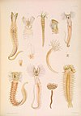

ampharetidae

Definition: Ampharetidae are a family of terebellid "bristle worm" (class Polychaeta). As such, they belong to the order Canalipalpata, one of the three main clades of polychaetes. They appear to be most closely related to the peculiar alvinellids (Alvinellidae) which inhabit the deep sea, and somewhat less closely to the well-known trumpet worms (Pectinariidae). These three appear to form one of the main clades of terebellids.Almost all are (like polychaetes in general) marine organisms; some inhabit brackish or freshwater though. Most are smallish deposit feeders which frequently live in small tubes they build from mud or similar substrate, or burrow in the sand.
Source: Wikipedia
Wikipedia Page (Something wrong with this association? Let us know.)
Wikidata Page (Something wrong with this association? Let us know.)